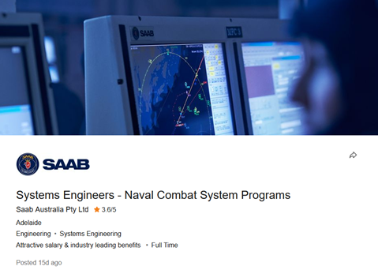
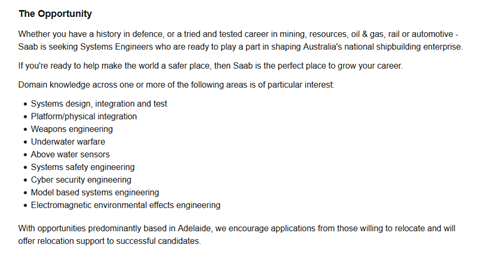
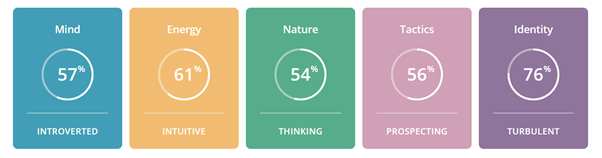

Name : Muhammad Naufal Al Ghifari
Email : s3918353@student.rmit.edu.au
Nationality : Indonesian (born in Madura, Indonesia)
Student ID : s3918353
Qualification : Diploma of IT (Obtained in 2021)
Hobby : Scale modelling, building minatures
Languages spoken:
Here is a picture of me:
In IT, I am very much interested in machine learning, security, and block chain technology. I am fascinated by these subjects because it is very new, but it is also gaining more and more importance in current era. My knowledge in these subjects are limited, but I have a strong will to learn and understand these concepts, especially machine learning.
My first interaction with a computer was when I was around 7 years old, my father taught me how to use Microsoft word, he also introduced me to internet later on. What he showed me might be considered as trivial today, he simply wrote a word in google image and then images related to the word would appear. I was completely mind blown how the machine could understand to find images of objects based on its name, of course I was oblivious about how it functioned. For someone that does not know how IT works, it is almost magical.
I chose to study in RMIT because it offers an online course that is way more accessible in many ways. It gives more people the opportunity to get higher education by providing it online; especially in the situation that the world is currently in. Another positive on RMIT’s online course is that yes, students can follow the course on their own pace (made possible with recorded webinar and tutorials), but it also holds live sessions. This is very interesting because although online courses can be convenient, it can also let the student feel lonely due to almost non-existent level of engagement between the university and the student, as well as between fellow students. Live sessions help to maintain a certain level of engagement so that students feel to be a part of a live community. Live sessions are something that I appreciate deeply.
In my studies with RMIT, I expect to learn and understand the principles of IT such as programming, web development, software development, system administration, databases management, algorithms, and various other subjects that I have yet to discover.


This job advertisement is to be a systems engineer, specialized in naval combat system programs. There are many programs that is linked to this job across Australian naval programs. More specifically, I am very much interested in the Cyber security related field which is part of being a system engineer. Which is why I chose this job to be my ideal job as it offers an opportunity that I am keen to dive into.
The employer (SAAB Australia) is looking for people with a set of skills such as:
Although I currently do not possess all skills that are required, especially in cyber security where I am yet to be initiated. I do have some basics in IT; these includes:
Firstly, I plan to obtain my bachelor’s degree with RMIT in Information Technology. From there, with knowledge and skills I obtained I may either start working to gain first-hand experience in a cybersecurity sector. Or I may also apply for a master’s degree in cybersecurity and then start working after I obtain my master’s degree. There are many pathways in IT, and I find that RMIT’s IT bachelor’s degree might open many doors and present opportunities for students wishing to engage in the vast IT world.
Test link: https://www.16personalities.com/free-personality-test
After taking the Myers-Briggs test, I got the following result: INTP-T Logician.
Key points of my personality according to the test are:
Key points of my personality according to the test are:
They do have points that I mostly agree upon such as introverted and intuitive. However, some others I have difficulties relating
to such as brain driven decision making. I tend to be rational of course, but I believe that I am more emotional than how the result
make it seem.
But again, it is an online test (not a more precise personal test) so safe to say that it is pretty good for what it is.
Test link: http://www.educationplanner.org/students/self-assessments/learning-styles-quiz.shtml
After taking an online test aimed to find one's best learning style, here is the result:
Test link: https://www.truity.com/test/big-five-personality-test
The test would give a rating based on 5 aspects abbreviated OCEAN: Openness, Conscientiousness, Extraversion, Agreeableness, and Neuroticism. Here is the result of my test:
To summarize briefly, according to this test my Openness score is very high which means that I tend to be more creative and imaginative than other that have taken the test. Similarly, to Myers-Briggs test, I am more reserved/less extroverted than most people which means I have to put effort to maintain a good communication with others, which is very important especially in a group.
For the most part, these tests seem to be confirming my initial assumption about how I work/study. For example, the result of the online learning test indicates that I am first and foremost a visual learner. This is something that I have put thought into before and I came to the same conclusion. Visual cues tremendously help me to retain new information and it is hard for me to learn new concepts when there is a lack of memorable visuals. I tend to attach information to an image, so that when I see the image, I can find information that is related to it.
However, it is apparent that I am rather a reserved person. Thus, communicating would need some effort for me. Of course, I will do my best to maintain a good communication and relationship with my groupmates.
The test result indicated that I tend to be more introverted than extroverted (57% introverted), it is true that in high school I tend to be reserved. But as I grow up, I feel that I am becoming more extroverted. I do not have issues to communicate in a group, in fact in multiple occasions I had to take control and lead the group. In conclusion, despite how the test stated that I am rather reserved, I believe I would have no issue when it comes to communication.
It is very important to have a group that is balanced where all team members can work together to cover everything needed. People have different personalities and expertise, it is a good idea to pick people that are not a carbon copy of our own personality. Having diverse group members is beneficial as it keeps it balanced; people have different ideas and when combined and handled properly, the best of everyone can be applied for the good of the team and the product they work towards.
Very briefly, EatSafe is a food barcode scanner application. Until now, people rely on the ingredients section on food packaging to figure out whether the food is suitable for them or not. However, it may be frustrating to figure out exactly what is contained in the food based on the ingredients list and allergy warnings. EatSafe will help consumer identifying whether a food item is suitable for them in a matter of seconds, simply scan the barcode and it will display crucial information about the item. EatSafe is planned to be available on iOS & Android devices.
The market that this service proposes is very broad and can benefit a large group of potential consumers, almost universally in fact. In Australia alone, it is estimated that 800.000 people are diagnosed with food allergy, and even more are likely to be undiagnosed (Allergy & Anaphylaxis Australia 2021). With this number in mind, having an app for everyone that can tell them whether they may eat food safely is very important. Furthermore, this may increase awareness of people who were previously not concerned by food allergy. Awareness in matters such as food allergy is crucial in order to avoid unnecessary danger and decrease food allergy related issues.
Due to its purpose, this service needs to be available primarily on mobile devices. EatSafe would be available on most (if not all) mobile operating systems. Users would use their smartphone camera to scan barcode on food items, then the app will display necessary information.
Firstly, users are asked to create an account, which would require an email or other social media account. Most other information for the account creation is optional such as name, age, gender, allergy, diet, etc. Which means that they are free to provide such information or not.
Users may also use the app without an account (as a guest). However, they may need to re-enter their information such as allergy and diet more than once. The guest profile would be stored locally on their devices. However, the creation of an account is highly encouraged to mainly facilitate the user should any additional information need to be added/ accessed elsewhere.
The main interface of this app would be the camera/ barcode scanner. This is the screen that would be shown to the user for quick and easy use of the app. Other menus are accessible through various icons on the side or bottom of the screen.
Once a barcode is scanned, this app would retrieve the food item that the code refers to and retrieve all necessary information related to it such as: ingredients, traces of other ingredients, allergens, suitable diets, etc. Once all information obtained, it will compare it to the diet profile of the user and show the result on the result screen.
The result screen needs to be simple, pleasing to the eye, and easy to understand. First and foremost, the user needs to know if they should or not avoid the product. The app would display one of the following: Suitable, Risky, Avoid, or Unknown. Suitable means that the product is in line with the user’s diet, risky means that there is possibility of ingredient traces of products that is not in line with the user’s diet and avoid would mean that the product contains substance that would be an issue for the user. The aim of EatSafe is to not use the “Unknown” result at all, however it is better than providing false information which in this case is potentially dangerous.
In addition, underneath the previous information, the app would also show common /dangerous allergens that is contained in the food. This is regardless of the user’s profile. The aim of this section if to increase awareness of food allergy.
And lastly, there is “More Info” button at the bottom should the user wish to know more about the product. All of this content must fit in the screen with no scrolling required (when possible).
The history will save everything scanned by the user for quick access. Every entry in the history would have a time and date in case the user needs to backtrack or review scanned items.
Hardware wise, EatSafe is rather simple as it is aimed at smartphone users which means it only requires a smartphone to function. For the development however, it would require a computer with the following specifications (approximatively):
To develop the iOS version of the app, a different setup is preferrable with the following specifications:
In terms of software, the following is required:
Various skills are required in the completion of a project of this scale. Most apparent is the application development skill and food allergy specialist. Various other experts regarding different diets also need to be highly involved in the making of this application. Lastly, commercialization expert is also needed to successfully promote the app when finished. Most skills needed in this project are relatively easy to find, however it might be difficult to determine how many diets would be covered by the app. A suggestion would be to start with a set amount of diet on launch and expand from there if need be.
Of course, there are potential drawbacks in the development of the app. The following includes a few of them:
The original problem was that it is sometimes difficult to find what substances are contained in a food item, some substance may pose a threat or issue to many people which is why this is an issue. This problem is solved by having an app that could scan and immediately tell the user if it is suitable for them or if they better avoid it.
Should this project be completed, launched, and operating as initially intended, the effect of this application has the potential to do many things. Not only it will conveniently help people find safe food or avoid dangerous food at any given time, but it may also increase awareness regarding food related issues and even reduce the number of allergy related disease.
Allergy & Anaphylaxis Australia 2021, Food Allergy Week 23-29 May 2021, n.p.